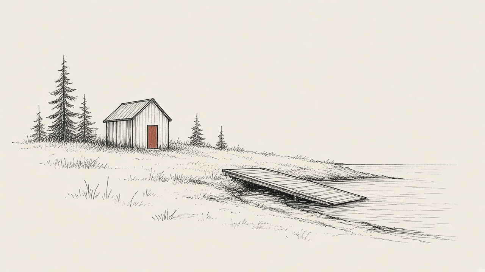

Stories we're following
Mitchell Field's future
Last updated
What's happening
On Oct. 22, the Harpswell Select Board unanimously supported a plan for the Midcoast Council of Governments to hold public workshops before the end of 2026 on the future of George J. Mitchell Field, including two remaining Navy-era buildings. The meeting costs would be covered by a grant. MCOG also offered to submit a formal proposal for a strategic plan in 2027. Workshop dates have not been announced.

The timeline
How the plan has moved
-
1954
The Navy fuel depot is built
The administration building, later demolished, was built in 1954 as part of the U.S. Navy fuel depot that supplied the former Brunswick Naval Air Station.
-
1992
The Navy closes the depot
The Portland Press Herald has written that the Navy closed the fuel depot in 1992. The Harpswell Anchor has written that the last fuel tank was drained that year.
-
2001
The town takes ownership
The federal government transferred the former U.S. Navy fuel depot on Harpswell Neck to the town. Recent coverage describes the property as about 120 acres, with shorefront on Middle Bay.
-
May 20, 2004
Voters name the property
A special town meeting voted to name the former Department of Defense fuel depot The George Mitchell Field.
-
June 10, 2025
Voters approve demolishing the administration building
A town referendum passed 877 to 676, authorizing up to $230,000 to demolish the vacant waterfront building and remove hazardous materials.
-
December 2025 to early 2026
The building comes down
Lakeside Concrete Cutting demolished the structure for about $144,100. In January 2026, the Select Board voted 3-0 to spend about $40,000 more to remove the concrete slab and foundation.
-
March 2026
Town Meeting sets aside sentry-building funds
Voters authorized up to $50,000 to remove hazardous materials from the sentry building at the park entrance. What happens to the building itself has not been decided.
-
June 11, 2026
The all-tide boat launch opens
The town opened a new boat launch at Mitchell Field. Construction cost about $1.58 million. The town says the ramp can be used at all tides, with trailer parking near the bandstand.
-
Oct. 22, 2026
The Select Board backs public workshops
The board unanimously supported MCOG holding a couple of public meetings before the end of 2026, with the costs covered by a grant, and unanimously approved $2,000 to smooth and clear the old administration-building site for pedestrian safety. Day-to-day stewardship is moving from a volunteer role to town staff.
-
Next Before the end of 2026
Public workshops on the field's future
MCOG would gather residents' feedback, including what to do with the sentry and generator buildings. Dates, times, and places have not been announced.
-
Proposed for 2027
A strategic plan
MCOG offered to submit a formal proposal to complete a strategic plan for Mitchell Field in 2027. That proposal has not been posted, and the plan has not been approved.
Next
Public workshops before the end of 2026
Dates, times, and places have not been announced. The town minutes say the Midcoast Council of Governments would hold a couple of public meetings, with the costs covered by a grant.
The property
Key points
This year
2
public workshops planned, dates not set
Proposed
2027
strategic plan, if a proposal is accepted
Nothing about the remaining buildings has been decided.
- About 120 acres on Harpswell Neck, with shorefront on Middle Bay
- Former Navy fuel depot dating to 1954; the town has owned it since 2001, and voters named it The George Mitchell Field in 2004
- Two remaining Navy-era buildings: the sentry building at the entrance and the larger generator building, now used for storage
- Voters have already authorized up to $50,000 to remove hazardous materials from the sentry building
- Estimates to deal with hazards in the generator building range from $95,000 to $150,000, or as much as $230,000 if the building is removed
- The former administration-building site could become parking or stay open space; there is no current redevelopment plan
The stakes
Who decides
Select Board
On Oct. 22 it unanimously supported the 2026 workshop approach and approved $2,000 for safety work at the old administration-building site. It also heard that day-to-day stewardship is moving to the town's parks director.
Town Meeting
Voters have made the large building decisions so far, including the 2025 demolition vote and the March 2026 authorization for sentry-building hazardous-materials work.
What's being decided
What to do with the sentry and generator buildings, and how the town should plan the rest of the property. MCOG would run the workshops and offered to propose a 2027 strategic plan. No building choice has been made.
Gaps
Not yet available
- Dates, times, and places for the 2026 workshops
- A posted listing of those workshops on the town calendar or MCOG's events page
- MCOG's formal proposal for a 2027 strategic plan
- A decision on whether to keep or remove the sentry building
- A decision on whether to keep or remove the generator building
- A long-term plan for the former administration-building site
- Coverage of the October 2026 workshop plan in the Portland Press Herald, the Times Record, or News Center Maine
Records
Details and sources
- Minutes of the Oct. 22, 2026 Select Board meeting, approved Nov. 5, say Administrator Kristi Eiane recommended engaging the Midcoast Council of Governments to facilitate public conversations about future uses of Mitchell Field and possible actions involving the sentry and generator buildings. "MCOG has offered to hold a couple of public meetings before the end of 2026 with the costs covered by a grant, as well as submitting a formal proposal to complete a Strategic Plan for Mitchell Field in 2027." The board "unanimously supported moving forward with the approach through 2026."
- The same minutes say management of Mitchell Field is transitioning from a volunteer steward model to town staff, with Parks, Recreation and Community Services Director Katie Neal coordinating day-to-day oversight. The board unanimously approved $2,000 to smooth depressions, remove rocks, and improve pedestrian safety at the vacant administration-building site. Broader decisions about future parking, open space, and long-term site design remain unresolved.
- The minutes also say voters authorized up to $50,000 for hazardous-materials removal from the sentry building, and that estimated costs for the generator building range from $95,000 to $150,000 for removal of hazards alone, up to as much as $230,000. Cost estimates for the sentry building were obtained for both hazardous-materials work alone and complete demolition; the minutes do not list those dollar figures.
- The Harpswell Anchor reported on Oct. 28, 2026, that the board voted 3-0 to accept MCOG's offer to host two workshop sessions later this year; that the property is a 120-acre park; that Lakeside Concrete Cutting estimated $31,700 to remove the sentry building or $42,800 to remove hazardous materials and keep it; and that workshop dates had not been announced. The Anchor also reported that voters approved demolishing the administration building in June 2025, that the town hired a contractor for $144,100, that the building was demolished that December, and that its foundation was removed in early 2026.
- The Anchor reported on June 11, 2025, that a June 10 referendum approved demolition of the administration building, 877 to 676, and authorized spending up to $230,000. On Jan. 8, 2026, the Select Board voted 3-0 to have Lakeside remove the remaining slab and foundation for about $40,000, after the winning demolition bid of about $144,000 left money within the $230,000 cap.
- The town's boat-launch page says a new all-tide launch opened at Mitchell Field in June 2026, with public trailer parking near the bandstand. The Anchor reported on June 22, 2026, that the launch opened June 11 and that Town Administrator Kristi Eiane said construction cost $1,576,762, with overall invoices still being tallied.
- A June 10, 2024, Portland Press Herald story said Mitchell Field encompasses 120 acres with a half-mile of waterfront and that the federal government transferred the former U.S. Navy fuel depot to the town in 2001. A Sept. 15, 2024, Press Herald story said the administration building was built in 1954 as part of the U.S. Navy fuel depot for the former Naval Air Station Brunswick. A May 2, 2014, Press Herald story said the Navy closed the fuel depot in 1992 and that Harpswell acquired the property in 2001; a Sept. 11, 2019, Press Herald story repeated that the depot closed in 1992. A search of the Press Herald, the Times Record, and News Center Maine on Nov. 10, 2026, did not turn up coverage of the October 2026 workshop plan itself.
- Results of a May 20, 2004, special town meeting, posted by the Town of Harpswell, say Article 20 was "Voted to accept as read" to "Name the former Depart. Of Defense Fuel Depot as The George Mitchell Field."
- The Harpswell Anchor reported on Oct. 28, 2026, that the Navy opened the Casco Bay Fuel Depot in 1954, that the depot closed and its last fuel tank was drained in 1992, that the town acquired the property in 2001, and that residents approved naming it after former U.S. Sen. George Mitchell in 2004. The "last tank was drained" detail was not repeated in the Press Herald or town records read for this page, so it is attributed to the Anchor.
- As of Nov. 10, 2026, the town meeting calendar and MCOG's upcoming-events page did not list dates for the Mitchell Field workshops.
- Town of Harpswell Select Board minutes, Oct. 22, 2026
- The Harpswell Anchor, Oct. 28, 2026
- The Harpswell Anchor, June 11, 2025
- The Harpswell Anchor, Jan. 8, 2026
- The Harpswell Anchor, June 22, 2026
- Town of Harpswell, Mitchell Field Boat Launch
- Town of Harpswell, Results of Special Town Meeting, May 20, 2004
- Portland Press Herald, May 2, 2014
- Portland Press Herald, Sept. 11, 2019
- Portland Press Herald, June 10, 2024
- Portland Press Herald, Sept. 15, 2024
- Town of Harpswell meeting calendar
- Midcoast Council of Governments, Upcoming